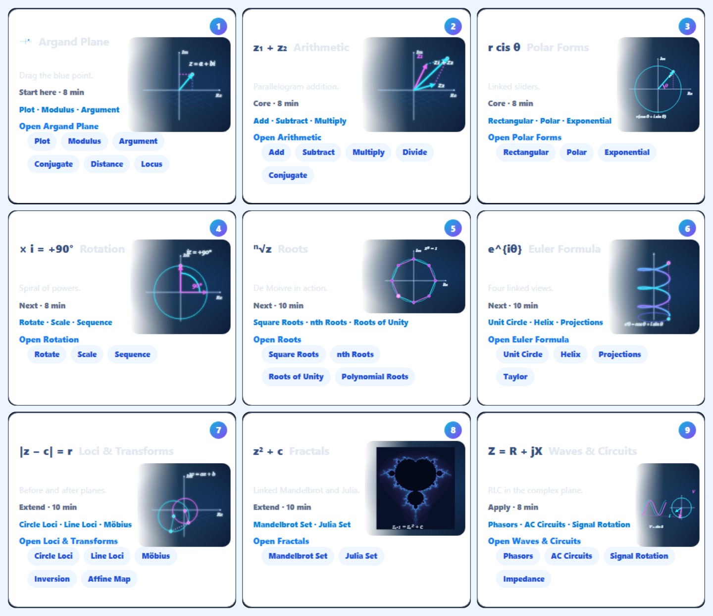

Only one illustration import and one card-child binding were added to the existing page. Exact source comparison and recorded desktop geometry confirm that hero, sidebar, header, card dimensions and order, text, links, right panels, progress, challenge, Ruhi and bottom sections retain their original content and geometry. Existing mathematical notation icons remain intact. Lab engines and routes were not edited.
The nine diagrams use the reference's navy fade and cyan/blue/violet/magenta mathematical vocabulary. The navy treatment is confined to the drawing slot. The existing cards have more tab links and less free space than the mockup: illustrations fit measured empty regions without covering text. On the narrowest phone cards the art becomes small; this is not a pixel-perfect reconstruction or a page redesign.

| # | Mathematics and animation | Navigation |
|---|---|---|
| 1 | Argand vector grows while its real and imaginary projections track the same endpoint. | Passed |
| 2 | Vector addition reveals the exact z₁+z₂ parallelogram and resultant. | Passed |
| 3 | Polar radius and angle rotate with consistent Cartesian projections. | Passed |
| 4 | Multiplication by i reaches an exact counterclockwise 90° rotation, then returns. | Passed |
| 5 | Eight roots exp(2πik/8) form a regular polygon; highlights cycle over exact roots. | Passed |
| 6 | Three-turn exponential helix traces with a synchronized circular projection and cyan/violet spectrum. | Passed |
| 7 | The affine map w=az+b moves the circle center and scales its radius by |a|. | Passed |
| 8 | Actual Mandelbrot escape times are computed once; cached palettes blend with gentle zoom. | Passed |
| 9 | Voltage sin θ and current sin(θ−π/4) remain synchronized with their complex phasors. | Passed |
SVG provides crisp immediate and reduced-motion diagrams. A lazy Canvas2D layer animates the same mathematical marks at device pixel ratio capped at 2. The existing GSAP ticker drives visible cards; no dependency was added. Hover eases animation speed and lighting. IntersectionObserver pauses offscreen cards, document visibility pauses hidden pages, and reduced motion selects static diagrams. Unmount removes ticker callbacks, observers and listeners and releases per-card canvas buffers.
No WebGL contexts or per-frame React state updates. Mandelbrot uses a 192×160 escape-time grid with 112 iterations, cardioid/bulb shortcuts, idle computation and three bounded cached palette canvases. Euler is a mathematical projected helix rendered in 2D.
| Mode | Average FPS | Median / p95 frame | Long tasks | Active illustrations |
|---|---|---|---|---|
| baseline | 60.0 | 16.7 / 16.7 ms | 0 | 0 |
| upgraded | 57.5 | 16.7 / 16.8 ms | 0 | 9 |
Four-second Chromium samples at 1672×941 on this machine. Baseline suppresses only the new illustration component in the browser response. These results do not guarantee 60 FPS on every device. Raw performance.
src/pages/ComplexNumbersStudio.tsxsrc/studios/complex/illustrations/ComplexLabIllustration.tsxsrc/studios/complex/illustrations/fractal.tssrc/studios/complex/illustrations/geometry.tssrc/studios/complex/illustrations/illustrations.csssrc/studios/complex/illustrations/illustrations.test.tssrc/studios/complex/illustrations/renderer.tssrc/studios/complex/illustrations/scenes.tsscripts/audit-complex-illustrations.mjsscripts/benchmark-complex-illustrations.mjsscripts/report-complex-illustrations.mjsEvidence is stored in artifacts/complex-illustrations/.